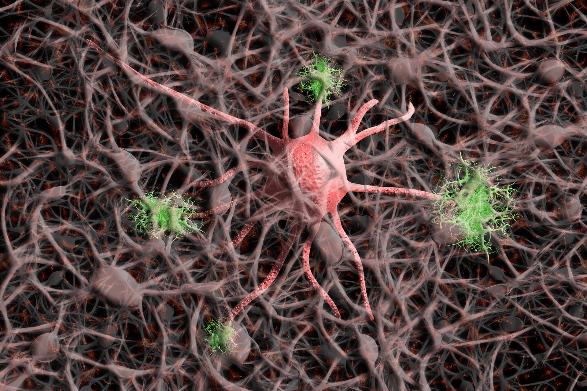

Neurons
A neuron, also known as a neurone or nerve cell, is an electrically excitable cell that processes and transmits information through electrical and chemical signals.
21. November 2021 | Matthias Montes
A journey trough mostly uncharted terrain and hypotheses for the mechanics of dreams.
14. January 2022 | Elana Montoya
Psychology
Brain
Dream
Dreams are defined as the succession of hallucinatory images, scenarios, ideas, emotions, and sensations that occur involuntarily within the mind during certain stages of sleep. Although the content and purpose of dreams are not well understood they have been a topic of scientific research, as well as philosophical and religious interest throughout many aspects of recorded history.
There is solid scientific evidence which clearly indicates that dreams are a common occurrence throughout the lives of most human beings and other mammals in general. Although there may be many psychoactive substances which are capable of inducing realistic hallucinations, it is worth noting that these compounds simply induce a state of mind during waking consciousness which the brain is already adept at generating during normal sleep. Dreams may be broken down into five differing levels of clarity and intensity described below:
At the lowest level, a person may experience a heightened state of mental visualization that one drifts into when daydreaming or using their imagination. This state results in a level of visualization that is mostly felt internally within the mind's eye instead of being visually perceived. It can be described as a short-term detachment from a person's immediate surroundings, during which a person's contact with reality is blurred and partially substituted by a fantasy. The generation of the details of this internal visualization are partially autonomous in nature, but mostly controlled by the content of one's current thought stream. This level is extremely common and occurs frequently during waking consciousness on a daily basis.
At this level, the experience of daydreaming and general imagination begins to progressively heighten and form into what is known as «hypnagogia». This is defined as the experience of the transitional state between wakefulness to sleep and generally consists of hearing indistinct noises and seeing faded imagery behind closed eyelids. This level is commonly experienced as a person begins to fall asleep.
At this level, the vividness and intensity slightly increases and spontaneous imagery becomes fully defined in its appearance and is now seen within a person's direct line of sight under closed eyelids. Alongside this, audible noises, such as fleeting voices, music, and general auditory hallucinations are often present.
At this level, the ability to hallucinate increases, with random flashes of spontaneous hallucinatory scenarios beginning to show themselves. The hallucinations longer consist of fleeting imagery on the back of a person's closed eyelids, but become sustained as all-encompassing settings which surround the dreamer in what feels like a breakthrough into an alternate reality. In terms of sensory vividness, the dreams are not completely defined in their appearance or sound. This means that they often display themselves as partially to completely blurred and transparent. Additionally, the dreamer's physical body will often still feel at least partially connected to the real world. Other senses, such as touch, taste, and smell, may be extremely vague or entirely absent.
At the highest level, all five senses are replicated perfectly as the dream becomes completely realistic and indistinguishable from that of everyday reality in terms of the detail and sensory vividness that they provide. These sensations are equally capable of including both positive sensations, such as sexual orgasm, and negative sensations, such as pain and physical bodily harm.
Levels of intensity and occurrence
| Imaginative visualization | Partially hypnagogia | Fully hypnagogia | Partially dreams | Fully dreams |
|---|---|---|---|---|
| Mental visualization | Faded imagery | Spontaneous imagery fully defined | Spontaneous hallucinatory scenarios | All senses replicated perfectly |
| During waking consciousness | Transition between wakefulness to sleep | Sleep state | Sleep state | Sleep state |
The most fundamental component of any dream or hallucinatory state can be defined as some form of perceivable sensory input. This differs from that of everyday sensory input in that it is received from an internal source created by a person's own mind as opposed to an external source within their perceivable surrounding environment. A dreamscape, the internal environment in which a dream takes place, is capable of manifesting itself completely realistically, with convincing and detailed equivalents of any or all of the five senses across varying degrees of vividness and intensity.
The majority of the perceived input in a dream is created within a person's mind, however, some senses such as hearing always allow external input. In a dream, an externally sourced sound event may not be consciously perceived as directly as in waking life. However, parts of the sound may manifest itself in the dream as either the original sound or a distorted version of it. For example, an airplane in the physical world may be perceived as a thunderstorm in the dream. This is, however, not limited to only hearing, as other senses, such as touch and smell, are also possible, and both the input and its manifestation within the dream may be multisensory.
Internal and external inputs may influence a dream.
Concerning the perspective in which dreams are perceived through, just like literary plots, dreams can be experienced through four alternative vantage points which are described and listed below. The perspective through which dreams are perceived through may be experienced through the four alternative vantage points described below:
At levels 4 and 5 dreams consistently manifest themselves through extremely detailed imaginary landscapes, locations, and sceneries of infinite variety. These exist to act as the setting in which the plot of the dream occurs. The geography of these settings is capable of rendering itself as static and coherent in organization, but will usually result in a non-linear, nonsensical, and continuously changing layout which does not obey the laws of physics. The appearance and style of these settings appear to be selected at random, and are often entirely novel.
«Dreams do, however, place a heavy emphasis on replicating and combining real life locations stored within a person's memories, especially those which are prominent in their daily life.»
Across the setting of almost any dream, the scenery is inhabited and populated by conscious dream characters who can be spoken to and communicated with in extreme amounts of detail. These entities appear to be the inhabitants of a perceived independent reality – they are expectant of one's appearance and interact with the dreamer in various ways. In terms of their appearance, dream characters can show themselves as literally anything but will usually display themselves as perfectly ordinary people. These people are equally likely to be complete strangers or randomly selected people which the dreamer has encountered throughout their life. The more prominent and emotionally significant the person is, the more likely they are to be encountered within the dreamscape. There are distinctly different types of dream characters which one may encounter, each of which represents a particular subsection of one's consciousness through both their visible form and their personality. These can be broken down into three separate categories and include:
When communicated with through spoken word the level of coherency in which these entities can reply with is highly variable but can be broken down into 4 distinct levels of communication:
The scenery is inhabited and populated by conscious dream characters.

Each dream component is randomly shuffled and compiled into an infinite variety of potential plots and scenarios. These may be positive or negative to experience and are challenging to define in a comprehensive manner in much the same way that we cannot predict the plot of abstract literature or films. They can, however, be broken down into basic occurrences which entail visiting any number of settings which contain within them any number of interactive dream characters. Additionally, completely unpredictable plot devices, events, and occurrences force the dreamer to become involved within within the specific scenario of the dream. These scenarios and plots can be linear and logical, with events that occur in a logical sequence which lead into each other through cause and effect. Equally likely, however, are scenarios and plots that present themselves as nonsensical and incoherent. This means that the plot will occur with natural events which are capable of switching between each other repeatedly in rapid succession. The plots themselves can either be entirely new experiences that are unlike anything experienced within the real world, old experiences, such as memory replays, or a combination of the two. It is possible in some cases for the plot of the dream to be changed by the thoughts of the dreamer, for example the dreamer could think of a person and the person appear around the corner. However this is anecdotal and not common. The perception of time in hallucinatory dream scenarios typically feel as if they are being experienced in real-time, which means that if 20 seconds are perceived to have passed within the dream the same amount of time will have elapsed in the real world. However, it is also possible for time distortions to occur, resulting in scenarios and plots that can feel as if they last days, weeks, or even an infinite amount of time. A standard component of any dream is a strong sense of uncontrollable and powerful plot acceptance. This feeling allows the dreamer to accept any plot within a dream as an entirely real event in which the results of a person's own actions have genuine consequences regarding the dreamer's life. This acceptance motivates the dreamer to avoid danger, solve puzzles, and accept the scenarios and plots as reality even if it is clearly and undeniably more likely to be a dream than an event which could ever occur within real life.
While the exact mechanics of dreams remain unknown and the tulpa phenomenon remains unproven scientifically, the tulpa community has given rise to several popular speculative hypotheses that try to explain the mechanics that would allow people to experience the phenomenon, one of which is proposed below.
A neuron is an electrically excitable cell that processes and transmits information.
The simulatory mind hypothesis posits that basic thought, imagination, dreaming, and hallucination are all essentially the result of the same mechanism rendering data at different levels of detail within a neurological simulation framework system which exists to mirror the external environment by categorizing the sensory input it receives into a database of separate concepts and subconcepts in order to later use these for the processing of ideas and thoughts. Assuming this is true, a person's mind's eye could be thought of as similar to a computer simulation framework which uses its internally stored memories to render concepts and ideas at varying levels of detail. Although the detail at which this renders concepts during everyday life is usually low, during dreams and hallucinations this system is capable of generating data that is detailed enough to be hyper-realistic and indistinguishable from waking life. This includes the ability to generate autonomous entities which are capable of coherent conversation. This suggests that dreams are merely a neurological computer simulation framework which becomes activated during sleep, which has a database comprised of internally stored concepts which one has encountered throughout their life. This randomizes, shuffles, and splices its particular set of memories, concepts, and variable together in a manner which places emphasis upon concepts with recency and person emotional significance. The question as to why such a system would exist within the brain at all is an interesting one. It perhaps exists for the straightforward and basic purpose of generating potential scenarios which one may encounter in life as a means of internal practice to encourage survival should the possible event occur in real life. This would explain why dreams play such a huge emphasis on one's own fears and desires and indicates that they, therefore, serve a fundamentally important evolutionary function.